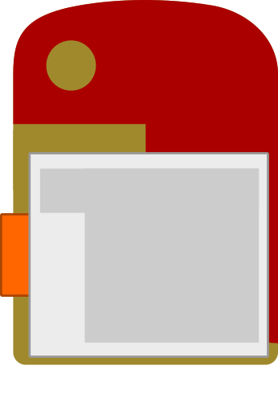
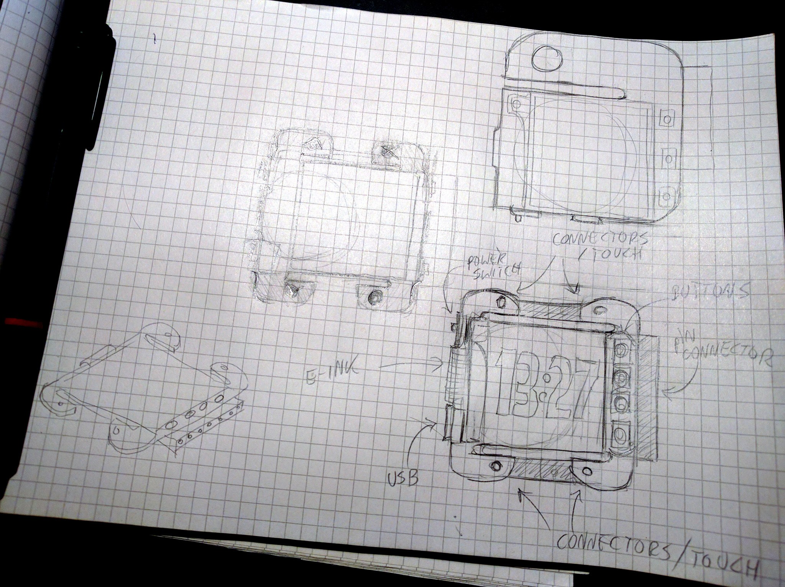
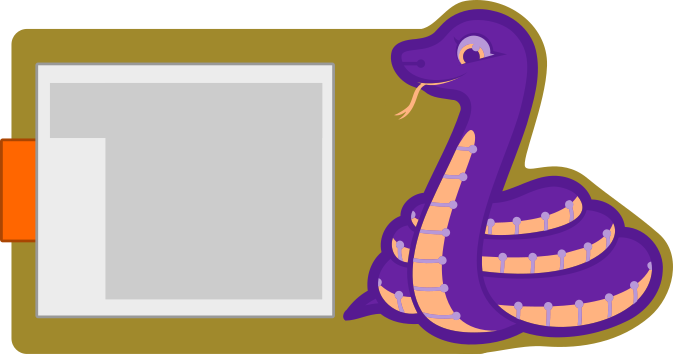
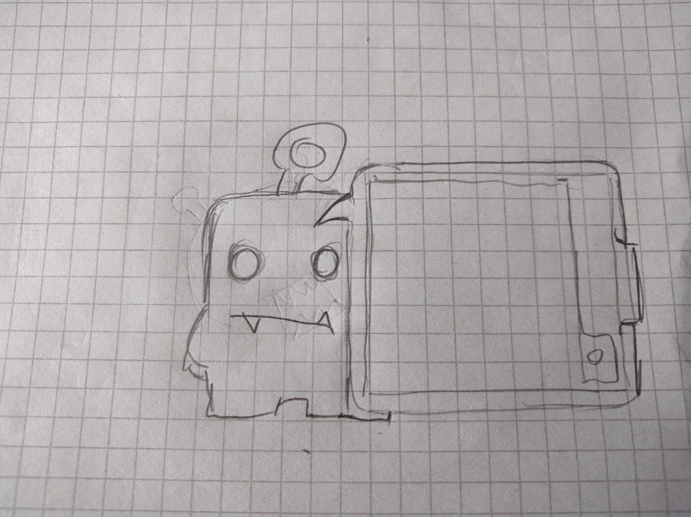

The Shape¶
Published on 2018-04-10 in CircuitPython Badge.
Now that I have the e-ink display drivers written, it’s time to start thinking about another prototype, the Mark III. But what shape should it have? For the LCD/OLED I just went for the game handheld looks, because those displays are suitable for making simple games, that layout is also convenient for all sorts of menus and navigation, and the shape is generally associated with fun and pleasure. But with an e-ink display, that doesn’t make so much sense anymore, so I started thinking about other possibilities.
But before I start with that, let’s review what we need to have in there:
display (38×32mm)
USB port
power switch (not sure about this anymore)
expansion header (either a female 2.54mm pin header, or grove sockets)
LIR2505 battery in a holder (25mm diameter)
optionally some crocodile clip contacts/touch panels
optionally some buttons
all the components
Ideally we want all the components on one side, though that is not a hard requirement. We probably also won’t fit it in 50×50mm, so 100×100mm is the new limit. With that in mind, what can we do?
Well, it’s a Python badge, so there is a good chance it’s going to be used on a Python conference, so why not play with the motifs from the Python logo? For example, something like this:
At the top we could have the pin header connector, so that expansions would come in forms of various hats for the snake — a crown with crocodile clip contacts, a paper hat with prototyping holes, and a number of different hats with various sensors or LEDs. The USB socket would go on the bottom, so that we can easily power the thing with a USB cable and still wear it on the neck. Edge-mounted buttons could go on both sides, the battery goes on the other side, as well as all the components. The power switch can go next to the USB, but if we want this to also work as a watch (the SAMD21 chip has a built-in RTC), then we probably don’t even want a power switch, just some sleep modes.
Then I thought a bit more about the RTC and the Pebble watch, and I though: why not make it in a shape that could be both worn as a badge and as a (large) wristwatch? That would be pretty cool, people could make wearable things with it. So I started thinking about how this would be laid out. Unfortunately, I don’t see a way of packing it all on a small-enough PCB and still making it thin enough to fit on your wrist. So I guess that is out (but I might revisit it in another project).
And then I went to the Hackaday Unconference, and saw a presentation that talked about how electronics are scary and ugly for most girls, and how the presenter worked on making them look good, and how that made a lot of difference in interest. And I thought, hey, Guido van Rossum wears that “Python is for girls” t-shirt on his every keynote, maybe I should work on this badge a little bit more and also make it look nice. It would be great if I could make it something that you would actually want to wear, even after the conference, as an accessory. So what can I do?\
The lazy option is to re-use my Blinka designs and use the CircuitPython mascot on the badge:
This is shiny, but it’s still not something I would like to wear, especially with that display that seems to be tucked on. Also, while the cute snake might attract the less technical part of the population, it might at the same time scare the more technically- inclined one. It wouldn’t be such a tragedy, but maybe we can do better. So now I’m thinking about original designs. I think I want to put there some kind of a cartoon monster, that would be both cute and cool at the same time, and I want to incorporate the display into the design more. This is one of the sketches I have:
I’m really not sure what it is going to be in the end — I will give myself some time for this. In the worst case, I can just use a floral pattern around the display.